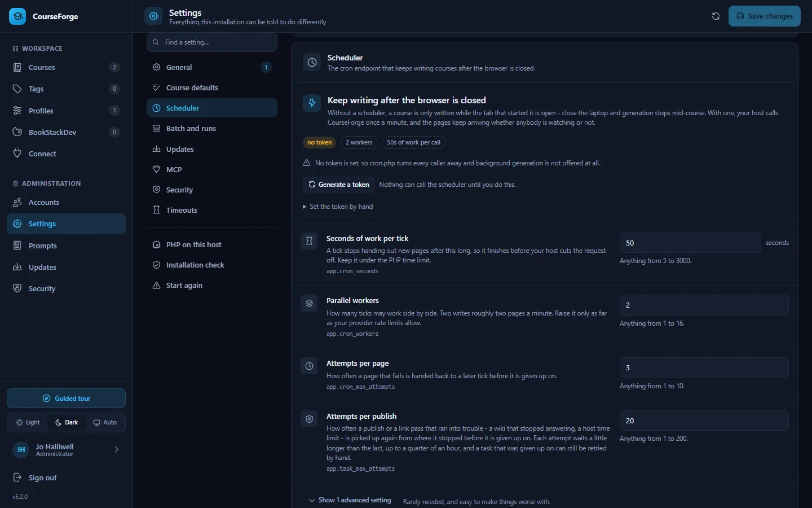

Administer
Settings
Every setting an administrator can change, what it does and its default - generated from the one declaration the Settings screen, the API and the MCP tools all read.
Administration › Settings holds everything the installation can be told to do differently, one card per group. There are 60 settings in 8 groups. Each field carries its own description, its range and whether this installation has changed it.


How settings are stored#
config/defaults.json ships with the release: settings, the security policy, the content
details and the whole prompt library. Replaced by every update.
Never written to.
data/config.json what this installation changed, and only that. Written from the
admin screens. No update touches it.Splitting them is what makes an update safe: a new release brings new defaults and new prompt slots, and your decisions live in a file the update may not write. It also makes Reset a delete rather than a copy - setting a value back to the shipped default removes it from data/config.json, which stays a short, readable list of what this installation actually decided.
Every setting is declared once in the code (Support\Settings). The Settings screen draws a field from that declaration, the API validates against it, and the MCP tools describe and change settings from it - so a setting added in a release appears in all three at once. The reference below is generated from the same declaration.
The ones with consequences#
app.cron_token - the secret in the URL your host calls once a minute. Without one, cron.php answers 404 to everybody and CourseForge offers no background runs at all. At least sixteen characters; the screen generates one and hands you the finished URL. Rotating it invalidates the old URL immediately. See The scheduler.
app.cron_workers - how many scheduler ticks may work side by side, which is where parallelism in background generation comes from. Raise it only as far as your provider's rate limits allow; too high gives a run full of 429 errors, not a faster course.
The timeouts - app.ai_timeout_seconds defaults to 1800, because a long page on a reasoning model takes minutes; below about 600 you will lose work the provider was about to deliver. Your web server has its own limit too, and the smallest one wins.
updates.auto_install - off by default. On, the installation replaces its own files unattended at the configured hour. It backs up first and rolls back if the new version fails to start, but it is still an unattended change to a production system. See Updates.
mcp.allowed_origins - empty by default, which refuses every browser-based MCP client and affects nothing else. Add an exact origin only when you have such a client.
app.debug - puts exception details and stack traces into API responses and MCP errors. Leave it off on anything reachable from the internet.
app.task_max_attempts - how often a publish that ran into trouble is resumed before it is given up (twenty by default). Each attempt waits longer, up to a quarter of an hour.
Two settings hold secrets - app.cron_token and updates.github_token. Neither is ever sent to a browser: the screen is told whether one is stored, not what it is, and saving an empty box leaves the stored value alone. Neither can be stored until Security has passed.
Diagnostics and Set up PHP#
The Settings screen also carries Diagnostics - the same rows php tools/diagnose.php prints: PHP version and extensions, writable directories, the database, the scheduler's last tick, open invites - and Set up PHP, which raises PHP limits that are too low through .user.ini (Installation).
Over MCP#
list_settings, set_settings and reset_setting in the admin group reach every setting by its key, with the same validation as the screen. generate_cron_token rotates the cron token; get_cron_url reads the URL.
Every setting#
General#
What this installation is called and how it behaves by default.
| Setting | Default | What it does |
|---|---|---|
Installation nameapp.name |
"CourseForge" | Shown in the header and in the browser tab. Useful when you run more than one. |
Default course languageapp.default_language |
"English" | What a new profile starts with. Every course can still choose its own. Fuzzy search, or type any language at all. |
Pages at a time, in the browserapp.default_concurrency |
2 | How many pages the in-tab generator writes in parallel. Background runs use the cron worker count instead. Range 1-16. |
Public addressapp.public_url |
empty | The address this installation is reached at. CourseForge works it out from the request, so leave it empty unless it guesses wrong - behind a reverse proxy, for instance. It is what the cron URL is built from; the MCP connection line has its own setting below. |
Correct punctuation after the AIapp.typography |
true | Sets the quotation marks, apostrophes, ellipses, dashes and spacing of a generated page the way the course language does, before it is stored - German gets „ and “ where the model wrote " and ", French gets its guillemets and its narrow spaces, an ellipsis becomes one character and a hyphen between two words becomes a dash. Code, links, formulas and the markers CourseForge writes are never touched. This is what a new profile starts from, and each profile can decide for itself. It says nothing about a course that is already written: Course > Settings > Punctuation corrects one of those whatever this is set to. |
Debug modeapp.debug |
false | Puts exception details into API responses. Leave this off on anything reachable from the internet. |
Searches for a course briefingapp.research_default_searches |
8 | How many searches to ask for when researching a whole course and the course itself names no number. This is the one-off briefing that get_research_brief asks for, not the per-page budget under Content details. Range 0-50 max. |
Description length BookStack acceptsapp.bookstack_description_max |
2000 | BookStack validates description_html at 2000 characters and refuses anything longer, so a description past that is shortened for the cover page - never in CourseForge, where it stays whole and is what the pages are written from. Raise it only if your BookStack raised it too; 0 turns the shortening off entirely. Range 0-100000 characters. |
Course defaults#
What a generated page is made of before any course has decided otherwise. This is the bottom of the chain the Details tab shows: course, then chapter, then page, each overriding the one above.
| Setting | Default | What it does |
|---|---|---|
Learning objectivesdetails.features.objectives.default |
false | Opens the page with a short list of what the reader will be able to do afterwards. Every course starts from this and any course, chapter or page can override it; changing it here moves everything that has not. |
Summary sectiondetails.features.summary.default |
true | Closes the page with a compact recap of the key points. Every course starts from this and any course, chapter or page can override it; changing it here moves everything that has not. |
Practice exercisesdetails.features.exercises.default |
true | Adds hands-on tasks with worked solutions. Uses the "Exercises per page" value. Every course starts from this and any course, chapter or page can override it; changing it here moves everything that has not. |
Key terms glossarydetails.features.key_terms.default |
false | Adds a short glossary of the terms introduced on this page. Every course starts from this and any course, chapter or page can override it; changing it here moves everything that has not. |
Further readingdetails.features.further_reading.default |
false | Points to official documentation, standards or classic references. Every course starts from this and any course, chapter or page can override it; changing it here moves everything that has not. |
Code examplesdetails.features.code_examples.default |
true | Allows fenced, runnable code samples with language identifiers. Every course starts from this and any course, chapter or page can override it; changing it here moves everything that has not. |
Comparison tablesdetails.features.tables.default |
true | Allows Markdown tables for comparisons, options and overviews. Every course starts from this and any course, chapter or page can override it; changing it here moves everything that has not. |
Note / Tip / Warning calloutsdetails.features.callouts.default |
true | Allows blockquote callouts for the remarks that really matter. Every course starts from this and any course, chapter or page can override it; changing it here moves everything that has not. |
Mermaid diagramsdetails.features.mermaid.default |
true | Allows ```mermaid blocks for flows, states, hierarchies and timelines. Every course starts from this and any course, chapter or page can override it; changing it here moves everything that has not. |
MathJax formulasdetails.features.mathjax.default |
true | Allows LaTeX formulas using the delimiters BookStack renders. Every course starts from this and any course, chapter or page can override it; changing it here moves everything that has not. |
Emojisdetails.features.emojis.default |
true | Allows a handful of emojis in headings, callouts and do/don't markers. Every course starts from this and any course, chapter or page can override it; changing it here moves everything that has not. |
Anki cloze cardsdetails.features.anki.default |
false | Appends an importable cloze-deletion card set. Uses the "Anki cards" value. Every course starts from this and any course, chapter or page can override it; changing it here moves everything that has not. |
Auto linksdetails.features.auto_links.default |
false | Lets the AI drop (🔗 Title) cross references, which CourseForge turns into real BookStack links after publishing. Every course starts from this and any course, chapter or page can override it; changing it here moves everything that has not. |
Web researchdetails.features.web_research.default |
false | Look up the current state of the topic before writing - latest versions, current documentation, recent releases - and cite what was found. Costs money on most providers, and a client connected over MCP does its own searching instead. Every course starts from this and any course, chapter or page can override it; changing it here moves everything that has not. |
Minimum lengthdetails.params.min_length.default |
3000 | Lower bound for the body of a page. 0 leaves it to the model. Every course starts from this and any course, chapter or page can override it; changing it here moves everything that has not. Range 0-100000 words. |
Maximum lengthdetails.params.max_length.default |
15000 | Upper bound for the body of a page. 0 leaves it to the model. Every course starts from this and any course, chapter or page can override it; changing it here moves everything that has not. Range 0-100000 words. |
Diagrams per pagedetails.params.diagram_max.default |
2 | Upper bound for Mermaid diagrams. Only used when diagrams are enabled. Every course starts from this and any course, chapter or page can override it; changing it here moves everything that has not. Range 0-20 max. |
Exercises per pagedetails.params.exercise_count.default |
3 | How many practice tasks a page gets. Only used when exercises are enabled. Every course starts from this and any course, chapter or page can override it; changing it here moves everything that has not. Range 0-50 tasks. |
Anki cards per pagedetails.params.anki_cards.default |
5 | How many cloze cards a page gets. Only used when Anki cards are enabled. Every course starts from this and any course, chapter or page can override it; changing it here moves everything that has not. Range 0-100 cards. |
Auto links per pagedetails.params.link_count.default |
5 | Roughly how many cross references a page gets. Only used when auto links are enabled. Every course starts from this and any course, chapter or page can override it; changing it here moves everything that has not. Range 0-50 links. |
Audiencedetails.params.audience.default |
empty | Who the text is written for. Empty means the model derives it from the course topic. Every course starts from this and any course, chapter or page can override it; changing it here moves everything that has not. |
Searches per pagedetails.params.research_max_searches.default |
0 | Upper bound on web searches while writing one page. 0 lets the model decide how much to look up. Only used where web research is switched on. Every course starts from this and any course, chapter or page can override it; changing it here moves everything that has not. Range 0-20 max. |
Scheduler#
The cron endpoint that keeps writing courses after the browser is closed.
| Setting | Default | What it does |
|---|---|---|
Cron tokenapp.cron_token |
empty | The secret in the URL your host calls once a minute. Without one, cron.php answers 404 to everybody and background runs are not offered at all. |
Seconds of work per tickapp.cron_seconds |
50 | A tick stops handing out new pages after this long, so it finishes before your host cuts the request off. Keep it under the PHP time limit. Range 5-3000 seconds. |
Parallel workersapp.cron_workers |
2 | How many ticks may work side by side. Two writes roughly two pages a minute. Raise it only as far as your provider rate limits allow. Range 1-16. |
Attempts per pageapp.cron_max_attempts |
3 | How often a page that fails is handed back to a later tick before it is given up on. Range 1-10. |
Worker leaseapp.cron_item_timeout_seconds |
1800 | How long a page stays claimed by a worker that has stopped answering, before another one may take it. Range 60-7200 seconds. |
Attempts per publishapp.task_max_attempts |
20 | How often a publish or a link pass that ran into trouble - a wiki that stopped answering, a host time limit - is picked up again from where it stopped before it is given up on. Each attempt waits a little longer than the last, up to a quarter of an hour, and a task that was given up on can still be retried by hand. Range 1-200. |
Batch and runs#
How queued generation is polled and how long its records are kept.
| Setting | Default | What it does |
|---|---|---|
Minimum time between pollsapp.batch_poll_seconds |
60 | How rarely CourseForge asks a provider whether a queued batch has finished. Batches take hours; polling every minute wastes rate limit for nothing. Range 10-3600 seconds. |
Keep finished runs forapp.batch_keep_days |
30 | Finished run records are removed after this long. The pages they wrote are never touched. Range 1-3650 days. |
Default output ceilingapp.anthropic_max_tokens |
32000 | Used where a provider demands an explicit ceiling and the profile does not set one. Too low truncates a long page mid-sentence: a page at the shipped maximum length of 15,000 words is well over 20,000 tokens, which is why this ships at 32,000. A model whose own ceiling is lower is held to that ceiling, never to this number. Range 1000-200000 tokens. |
Updates#
Checking GitHub for a new version, and installing it.
| Setting | Default | What it does |
|---|---|---|
Updates enabledupdates.enabled |
true | Off means CourseForge never contacts GitHub and never replaces its own files. |
GitHub repositoryupdates.repository |
"ZcarecroW/CourseForge" | Where releases are published, as owner/name. Change it only if you run your own fork. |
Channelupdates.channel |
"stable" | Stable takes published releases only. Pre-release also takes betas and release candidates. One of stable, prerelease. |
Check for updates automaticallyupdates.auto_check |
true | Once a day, from the scheduler, so this screen is current when you open it. Needs cron. Automatic installation asks GitHub on its own and does not depend on this. |
Install them automaticallyupdates.auto_install |
false | Unattended updates at the time below, from the scheduler. Needs cron. A backup is taken first and restored if the new version fails to start. |
Time of dayupdates.auto_time |
"05:00" | Local server time. Pick an hour when nobody is generating anything. |
Time zone for that clockupdates.timezone |
empty | An IANA name such as Europe/Berlin - fuzzy search the list, or type one. CourseForge itself works in UTC; this is only for reading the hour above. Leave it empty and the server's own time zone is used, which is almost always the one you meant. |
Keep backups ofupdates.keep_backups |
2 | How many replaced versions stay on disk so an update can be rolled back. Range 0-10 versions. |
GitHub tokenupdates.github_token |
empty | Only needed for a private fork, or to lift the 60-requests-an-hour limit GitHub applies per IP address to anonymous callers. |
MCP#
The endpoint Claude and other MCP clients connect to.
| Setting | Default | What it does |
|---|---|---|
MCP endpoint enabledmcp.enabled |
true | The second front door, for Claude Code and other MCP clients. Turning it off refuses every token at once. |
Public URLmcp.public_url |
empty | The address an MCP client should use, if CourseForge cannot work it out for itself - behind a proxy, for instance. |
Allowed browser originsmcp.allowed_origins |
[] | Origins a browser-based MCP client may connect from. Command-line clients send no Origin and are unaffected. Leave empty to refuse all of them. |
Security#
Sign-in throttling and session lifetime.
| Setting | Default | What it does |
|---|---|---|
Failed sign-ins before an account is lockedsecurity.max_login_attempts |
5 | Counted for one account, wherever the attempts came from. This is what stands between a password and somebody working through a list of guesses at it. Range 1-100. |
Failed sign-ins before an address is lockedsecurity.max_address_attempts |
20 | Counted for one address, against any account, and deliberately looser than the figure above: an address is shared - an office, a mobile network, a VPN - and a cap of five there would let one person mistyping their password lock out everybody behind it. Raise it for a busy shared address; lower it towards the per-account figure for an installation only you reach. It is never used below that figure, because an address that locked first would put the door shut before the per-account count could ever fill. Range 1-1000. |
Counting windowsecurity.attempt_window_minutes |
15 | Failures older than this stop counting towards a lockout. Range 1-1440 minutes. |
Lockout lengthsecurity.lockout_minutes |
15 | undefined Range 1-1440 minutes. |
Sign out after inactivitysecurity.session_lifetime_minutes |
480 | undefined Range 5-43200 minutes. |
Timeouts#
How long CourseForge waits for somebody else.
| Setting | Default | What it does |
|---|---|---|
AI request timeoutapp.ai_timeout_seconds |
1800 | A long page on a reasoning model can genuinely take minutes. Below about 600 you will start losing work. Range 30-7200 seconds. |
Model list timeoutapp.ai_models_timeout_seconds |
240 | For the call that asks a provider which models the account can use. Range 10-1200 seconds. |
Connection timeoutapp.connect_timeout_seconds |
60 | How long to wait for a provider to answer at all, before any content arrives. Range 5-300 seconds. |
BookStack timeoutapp.bookstack_timeout_seconds |
240 | Publishing a large course is one long sequence of API calls. Range 10-1800 seconds. |